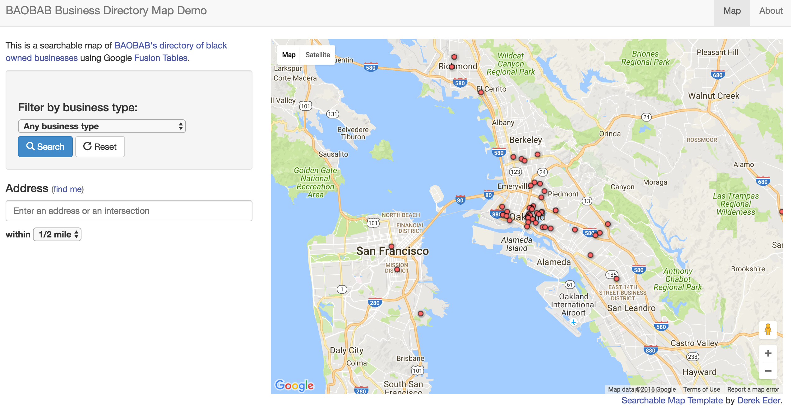
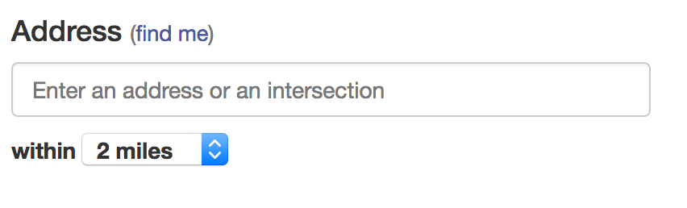

Changing Default Options
<16 Nov 2016>
I was helping my cousin with a website she’s putting together. She wanted to
change the default behavior for a select tag.
These are the steps I took to help her out.
- I looked into how the
selecttag was set in the first place- it worked with
HTMLandjs
- it worked with
- I just altered the default value.
hosted site address: https://kengie.github.io/baobab-map/
repository of code: https://github.com/kengie/baobab-map

As seen in the left, the default address radius in the search bar was set to ‘1/2 mile’ and she wanted to have it default to ‘2 miles’
I first had to figure out how it was set to ‘1/2 mile’ in the first place, and discovered this attribute was set by a javascript script function.
Unpacking the layers
First off, looking at the HTML, this is how the select element looks like
<label>
within
<select id='search_radius'>
<option value='400'>2 blocks</option>
<option value='805'>1/2 mile</option>
<option value='1610'>1 mile</option>
<option value='3220'>2 miles</option>
</select>
</label>
The values of the options were a bit weird but the id=search_radius helped me
find where the script was set.
Finding the js
the javascript setting the default value was in the file js/maps_lib.js
Searching for the id search_radius I found where the default value was set.
//reset filters
$("#search_address").val(self.convertToPlainString($.address.parameter('address')));
var loadRadius = self.convertToPlainString($.address.parameter('radius'));
if (loadRadius != "")
$("#search_radius").val(loadRadius);
else
$("#search_radius").val(self.searchRadius);
$(":checkbox").prop("checked", "checked");
$("#result_box").hide();
This line $("#search_radius").val(self.searchRadius); says,
- the element with the id
search_readius, set that value toself.searchRadius, so I needed to find where thatself.searchRadiuswas set, and found it toward the top of the file.
// the top of js/maps_lib.js
(function (window, undefined) {
var MapsLib = function (options) {
var self = this;
options = options || {};
this.recordName = options.recordName || "result"; //for showing a count of results
this.recordNamePlural = options.recordNamePlural || "results";
this.searchRadius = options.searchRadius || 805; //in meters ~ 1/2 mile
looking at the top of js/maps_lib.js file, we can see where searchRadius is
set, and what the value attributes in the <option> tags represent.
- the
value=xxxin the option tags are the number of miles in meters rounded to whole integers - if we change the value here from 805 (1/2 mile) to 3220 (2 miles), that should give use the behavior we want.
changing this last line in the file:
this.searchRadius = options.searchRadius || 3220; //in meters ~ 2 miles
Now, the page works as desired.

In conclusion
This was a bit weird since I’m not a front end guy ‘yet’, bc I would have
altered the HTML directly as in:
<label>
within
<select id='search_radius'>
<option value='400'>2 blocks</option>
<option value='805'>1/2 mile</option>
<option value='1610'>1 mile</option>
<option value='3220' selected>2 miles</option>
</select>
</label>
I would have expected to just add selected to the desired <option> and been
done with it…
But, since the element was handled with javascript, the attributes would be
overwritten with the js function, selecting what ever that function
decided to select.
That’s it for now, we’ll see what pops up next week.